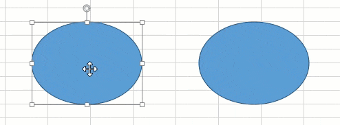
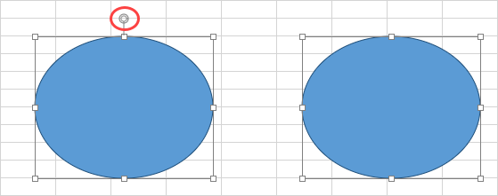

SpreadJS supports adding built-in shapes, custom shapes, connector shapes, and camera shapes in worksheets. These shapes can be used to enhance data visualization and interact with the information in the cells.
You can add text and hyperlinks in the shapes, format shape layout, and apply different shape styles like fill color, font size, horizontal and vertical alignment, border color and line width, etc. You can customize the shape attributes like rotating or resizing the shapes; defining and adding the connection points for connector shapes, and customizing the border of shapes.
The following types of shapes can be applied to the SpreadJS worksheets. Click on the images to visit the corresponding topics:
Shape Type |
Image |
Description |
|---|---|---|
| Built-in Shape | Choose from different types of built-in shapes and geometric figures such as squares and circles available in the worksheet. | |
| Connector Shape | Connect two or more shapes using distinct lines, arrows and connection points in the worksheet to create unique shapes and models such as flowcharts. | |
| Custom Shape | Add custom shapes in worksheets based on specific requirements and customize the shape model to draw and visualize diagrams. | |
| Camera Shape | Add a dynamic image that reflects any changes in the referenced region to help create useful and interactive dashboards in the worksheet. |
SpreadJS supports various operations on shapes to provide an aesthetic appeal to your worksheets while also making them look extremely professional.
| Group Shapes | Group and ungroup shapes in the worksheets. |
| Shape Property Formulas | Add built-in shapes and custom shapes with formulas in the worksheets. |
| Shape Property Links | Bind a shape's properties to a worksheet cell by reference in a formula. |
| Formatting Shapes | Add different types of compound lines in shapes. |
| Fill Effects | Add fill effects in shapes to enhance their appearance. |
| Text on Shapes | Add and edit text in shapes. |
| Hyperlinks on Shapes | Add hyperlinks on shapes. |
| Arrange Shapes | Adjust shape positions using shape alignment options, distribution options or snapping them to other shapes or grids while using multiple shapes. |
Note: To integrate shapes in the worksheet, gc.spread.sheets.shapes.*.*.*.js script file needs to be referenced.
When a shape is clicked, the shape handles become visible by default. They allow you to resize, rotate or adjust shapes. However, you can choose to hide the shape handles by setting showHandle method to false (true by default).
This option provides a cleaner view when resizing the shapes and hides all the handles. You can still select and move the shape by clicking and dragging it.
With Handles Without Handles

| JavaScript |
Copy Code
|
|---|---|
$(document).ready(function () { // initializing Spread var spread = new GC.Spread.Sheets.Workbook(document.getElementById('ss'), { sheetCount: 1 }); // get the activesheet var activeSheet = spread.getSheet(0); // Add heart shape to activeSheet heart = activeSheet.shapes.add("Shape1", GC.Spread.Sheets.Shapes.AutoShapeType.heart, 100, 60, 200, 160); // disable showHandle for the shape heart.showHandle(false); }); |
|
Similarly, you can also disable the rotation handle of a shape by setting allowRotate method to false (true by default). To disable rotation for connector shapes, allowResize can be set to false.

| JavaScript |
Copy Code
|
|---|---|
var oval; $(document).ready(function () { // initializing Spread var spread = new GC.Spread.Sheets.Workbook(document.getElementById('ss'), { sheetCount: 1 }); // get the activesheet var activeSheet = spread.getSheet(0); // Add heart shape to activeSheet oval= activeSheet.shapes.add("Shape1", GC.Spread.Sheets.Shapes.AutoShapeType.oval, 100, 60, 200, 160); // set allowRotate to false oval.allowRotate(false); }); // function to change angle of shape using code function myFunction() { var x = document.getElementById("input").value; // x is the angle by which shape is rotated oval.rotate(x); } |
|